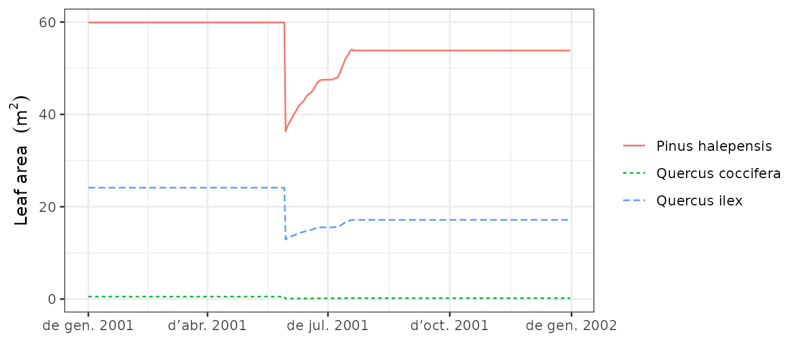
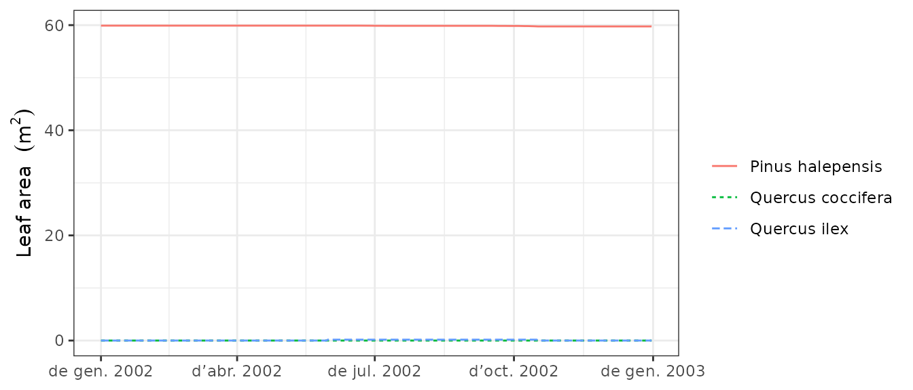
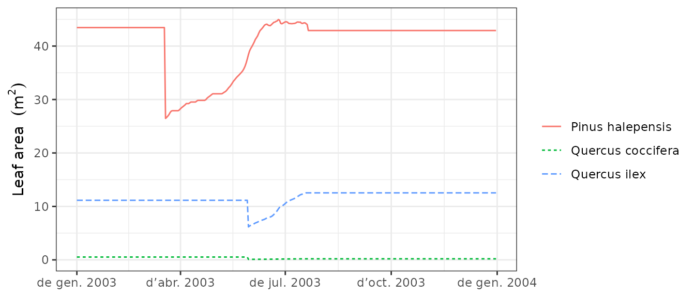

Forest dynamics
Miquel De Caceres
2021-07-27
Source:vignettes/ForestDynamics.Rmd
ForestDynamics.RmdAbout this vignette
This document describes how to run the forest dynamics model of medfate. This document is meant to teach users to run the simulation model within R. Details of the model design and formulation can be found at https://emf-creaf.github.io/medfatebook/index.html.
Preparing model inputs
Any forest dynamics model needs information on climate, vegetation and soils of the forest stand to be simulated. Moreover, since models in medfate differentiate between species, information on species-specific model parameters is also needed. In this subsection we explain the different steps to prepare the data needed to run function fordyn().
Preparing model inputs
Model inputs are explained in greater detail in vignette ‘Simulation inputs’. Here we only review the different steps required to run function fordyn().
Soil, vegetation, meteorology and species data
Soil information needs to be entered as a data frame with soil layers in rows and physical attributes in columns. Soil physical attributes can be initialized to default values, for a given number of layers, using function defaultSoilParams():
spar = defaultSoilParams(2)The soil input for water balance simulation is actually a list of class soil that is created using a function with the same name:
examplesoil = soil(spar)As explained in the package overview, models included in medfate were primarily designed to be ran on forest inventory plots. Here we use the example object provided with the package:
data(exampleforestMED)
exampleforestMED## $ID
## [1] "1"
##
## $patchsize
## [1] 10000
##
## $treeData
## Species N DBH Height Z50 Z95
## 1 148 168 37.55 800 750 3000
## 2 168 384 14.60 660 750 3000
##
## $shrubData
## Species Cover Height Z50 Z95
## 1 165 3.75 80 300 1500
##
## $herbCover
## [1] 10
##
## $herbHeight
## [1] 20
##
## attr(,"class")
## [1] "forest" "list"In the basic water balance, only mean temperature, precipitation and potential evapotranspiration is required, but radiation may also be necessary to simulate snow melt.
## MeanTemperature MinTemperature MaxTemperature Precipitation
## 2001-01-01 3.57668969 -0.5934215 6.287950 4.869109
## 2001-01-02 1.83695972 -2.3662458 4.569737 2.498292
## 2001-01-03 0.09462563 -3.8541036 2.661951 0.000000
## 2001-01-04 1.13866156 -1.8744860 3.097705 5.796973
## 2001-01-05 4.70578690 0.3288287 7.551532 1.884401
## 2001-01-06 4.57036721 0.5461322 7.186784 13.359801
## MeanRelativeHumidity MinRelativeHumidity MaxRelativeHumidity
## 2001-01-01 78.73709 65.15411 100.00000
## 2001-01-02 69.70800 57.43761 94.71780
## 2001-01-03 70.69610 58.77432 94.66823
## 2001-01-04 76.89156 66.84256 95.80950
## 2001-01-05 76.67424 62.97656 100.00000
## 2001-01-06 89.01940 74.25754 100.00000
## Radiation WindSpeed WindDirection PET
## 2001-01-01 12.89251 2.000000 172 1.3212770
## 2001-01-02 13.03079 7.662544 278 2.2185985
## 2001-01-03 16.90722 2.000000 141 1.8045176
## 2001-01-04 11.07275 2.000000 172 0.9200627
## 2001-01-05 13.45205 7.581347 321 2.2914449
## 2001-01-06 12.84841 6.570501 141 1.7255058Finally, simulations in medfate require a data frame with species parameter values, which we load using defaults for Catalonia (NE Spain):
data("SpParamsMED")Simulation control
Apart from data inputs, the behaviour of simulation models can be controlled using a set of global parameters. The default parameterization is obtained using function defaultControl():
control = defaultControl("Granier")Here we will run simulations of forest dynamics using the basic water balance model (i.e. transpirationMode = "Granier"). The complexity of the soil water balance calculations can be changed by using "Sperry" as input to defaultControl(). However, when running fordyn() sub-daily output will never be stored (i.e. setting subdailyResults = TRUE is useless).
Executing the forest dynamics model
In this vignette we will fake a three-year weather input by repeating the example weather data frame three times, while reducing precipitation of the second year to the half.
meteo2001 = examplemeteo
meteo2002 = examplemeteo
meteo2002$Precipitation = meteo2002$Precipitation/2
meteo2003 = examplemeteo
row.names(meteo2002) = seq(as.Date("2002-01-01"),
as.Date("2002-12-31"), by="day")
row.names(meteo2003) = seq(as.Date("2003-01-01"),
as.Date("2003-12-31"), by="day")
meteo_01_03 = rbind(meteo2001, meteo2002, meteo2003)Now we run the forest dynamics model using all inputs (note that no intermediate input object is needed, as in spwb() or growth()):
fd<-fordyn(exampleforestMED, examplesoil, SpParamsMED, meteo_01_03, control,
latitude = 41.82592, elevation = 100)## Simulating forest dynamics for year 2001 (1/3)
## (a) Growth/mortality
## (b) Recruitment
## Coldest month mean temp. (Celsius): 0.05 Moisture index: 0.36 FPAR (%): 35.7
## Tree species with seed rain: 148,168 recruited: <none>
## (c) Summaries
## Simulating forest dynamics for year 2002 (2/3)
## (a) Growth/mortality
## (b) Recruitment
## Coldest month mean temp. (Celsius): 0.05 Moisture index: 0.18 FPAR (%): 36
## Tree species with seed rain: 148,168 recruited: <none>
## (c) Summaries
## Simulating forest dynamics for year 2003 (3/3)
## (a) Growth/mortality
## (b) Recruitment
## Coldest month mean temp. (Celsius): 0.05 Moisture index: 0.36 FPAR (%): 35.9
## Tree species with seed rain: 148,168 recruited: <none>
## (c) SummariesIt is worth noting that, while fordyn() calls function growth() internally for each simulated year, the verbose option of the control parameters only affects function fordyn() (i.e. all console output from growth() is hidden). Recruitment and summaries are done only once a year at the level of function fordyn().
Inspecting model outputs
Stand, species and cohort summaries
Among other outputs, function fordyn() calculates standard summary statistics that describe the structural and compositional state of the forest at each time step. For example, we can access stand-level statistics using:
fd$StandSummary## Step LeafAreaIndex TreeDensityLive TreeBasalAreaLive ShrubCoverLive MaxHeight
## 1 0 1.972712 552.0000 25.03330 3.75 800.0000
## 2 1 1.920101 546.3412 24.94302 3.75 802.1067
## 3 2 1.824461 540.7403 24.69822 3.75 802.2443
## 4 3 1.784226 535.1969 24.75506 3.75 806.1676where we can observe an increase in stand basal area and leaf area index during years 1 and 3, but a reduction during the second (drier) year. Species-level analogous statistics are shown using:
fd$SpeciesSummary## Step Species LeafAreaIndex TreeDensityLive TreeBasalAreaLive ShrubCoverLive
## 1 0 148 1.00643723 168.0000 18.604545 0.00
## 2 0 165 0.03965932 0.0000 0.000000 3.75
## 3 0 168 0.92661573 384.0000 6.428754 0.00
## 4 1 148 0.97901457 166.2777 18.515438 0.00
## 5 1 165 0.03965932 0.0000 0.000000 3.75
## 6 1 168 0.90142670 380.0634 6.427579 0.00
## 7 2 148 0.92912044 164.5731 18.332285 0.00
## 8 2 165 0.03965932 0.0000 0.000000 3.75
## 9 2 168 0.85568134 376.1672 6.365931 0.00
## 10 3 148 0.90759897 162.8860 18.333646 0.00
## 11 3 165 0.03965932 0.0000 0.000000 3.75
## 12 3 168 0.83696796 372.3109 6.421411 0.00
## MaxHeight
## 1 800.0000
## 2 80.0000
## 3 660.0000
## 4 802.1067
## 5 80.0000
## 6 662.5325
## 7 802.2443
## 8 80.0000
## 9 662.6937
## 10 806.1676
## 11 80.0000
## 12 667.2288Tree/shrub tables
Another useful output of fordyn() are tables in long format with cohort structural information (i.e. DBH, height, density, etc) for each time step:
fd$TreeTable## Step Year Cohort Species Name N DBH Height Z50 Z95
## 1 0 NA T1_148 148 Pinus halepensis 168.0000 37.55000 800.0000 750 3000
## 2 0 NA T2_168 168 Quercus ilex 384.0000 14.60000 660.0000 750 3000
## 3 1 2001 T1_148 148 Pinus halepensis 166.2777 37.65347 802.1067 750 3000
## 4 1 2001 T2_168 168 Quercus ilex 380.0634 14.67408 662.5325 750 3000
## 5 2 2002 T1_148 148 Pinus halepensis 164.5731 37.66031 802.2443 750 3000
## 6 2 2002 T2_168 168 Quercus ilex 376.1672 14.67897 662.6937 750 3000
## 7 3 2003 T1_148 148 Pinus halepensis 162.8860 37.85625 806.1676 750 3000
## 8 3 2003 T2_168 168 Quercus ilex 372.3109 14.81895 667.2288 750 3000The same can be shown for dead trees, where we see larger mortality rates during the second (drier) year:
fd$DeadTreeTable## Step Year Cohort Species Name N DBH Height Z50 Z95
## 1 1 2001 T1_148 148 Pinus halepensis 1.722253 37.65347 802.1067 750 3000
## 2 1 2001 T2_168 168 Quercus ilex 3.936579 14.67408 662.5325 750 3000
## 3 2 2002 T1_148 148 Pinus halepensis 1.704598 37.66031 802.2443 750 3000
## 4 2 2002 T2_168 168 Quercus ilex 3.896223 14.67897 662.6937 750 3000
## 5 3 2003 T1_148 148 Pinus halepensis 1.687123 37.85625 806.1676 750 3000
## 6 3 2003 T2_168 168 Quercus ilex 3.856281 14.81895 667.2288 750 3000Accessing the output from function growth()
Since function fordyn() makes internal calls to function growth(), it stores the result in a vector called GrowthResults, which we can use to inspect intra-annual patterns of desired variables. For example, the following shows the leaf area for individuals of the three cohorts during the three consecutive years:
plot(fd$GrowthResults[[1]], "LeafArea", bySpecies = T)
plot(fd$GrowthResults[[2]], "LeafArea", bySpecies = T)
plot(fd$GrowthResults[[3]], "LeafArea", bySpecies = T) where we see that the second (drier) year, resulted in a decrease in leaf area, due to the sink limitation caused by drought, and the third (normal) year lead to a recovery of leaf area. Note also the sink limitation to sapwood area (hence diameter) growth during the second year:
plot(fd$GrowthResults[[1]], "SapwoodArea", bySpecies = T)
plot(fd$GrowthResults[[2]], "SapwoodArea", bySpecies = T)
plot(fd$GrowthResults[[3]], "SapwoodArea", bySpecies = T)